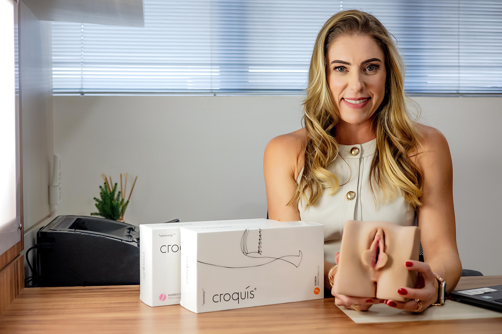
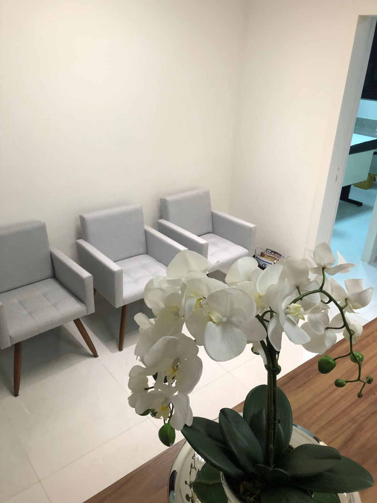
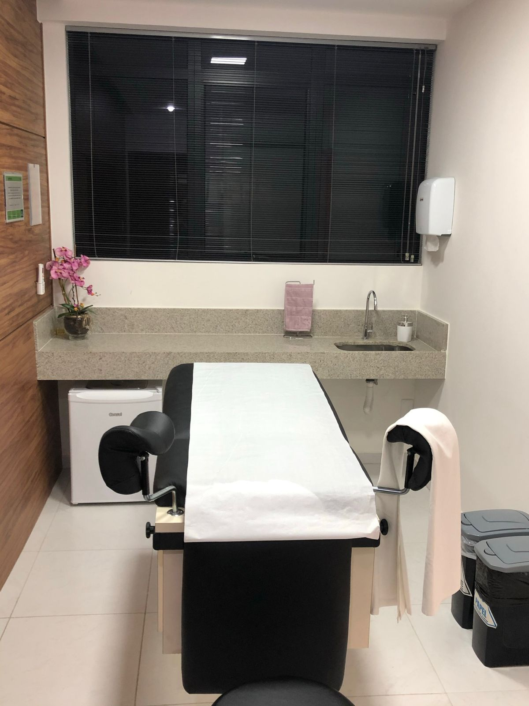
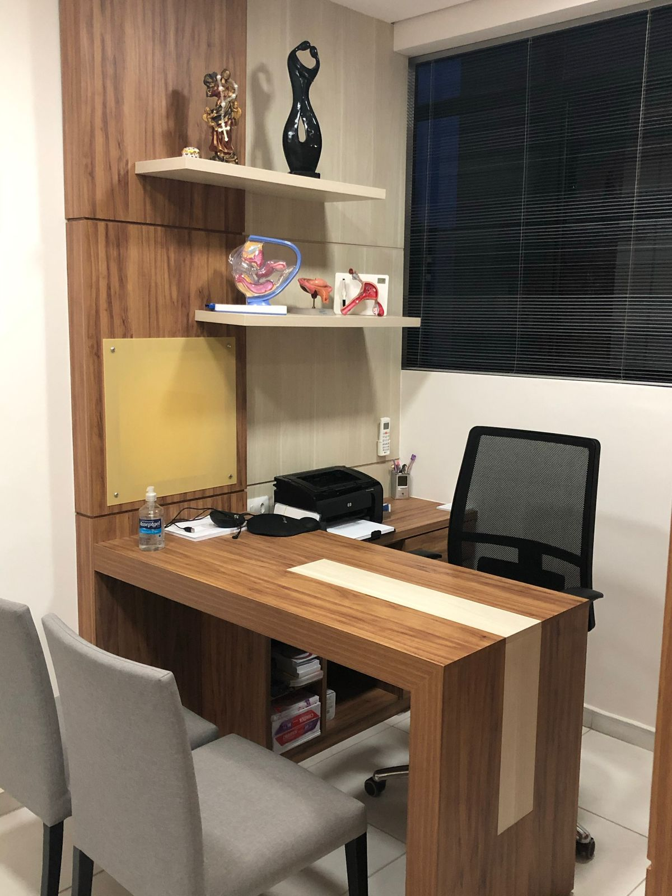
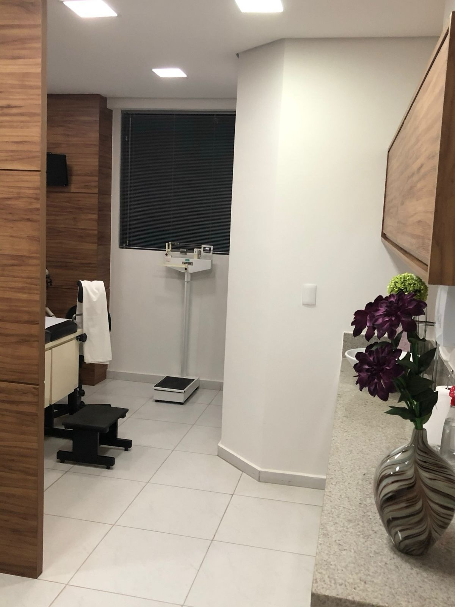

Consulta Ginecológica
Atendimento completo voltado à prevenção, diagnóstico precoce e acompanhamento da saúde íntima feminina.
Atendimento ginecológico focado na saúde integral da mulher, com ética, acolhimento e precisão clínica.
Agendar consultaOlá! Sou Dra. Daniele Franklin, Médica Ginecologista e Obstetra apaixonada pela saúde feminina. Dedico-me a acompanhar cada mulher em todas as fases da vida, com atenção, cuidado e profissionalismo.
Acredito em uma medicina baseada na escuta atenta, na confiança mútua e no cuidado individualizado. Busco criar um ambiente seguro, acolhedor e confortável, onde cada paciente se sinta respeitada e bem orientada.
Meu compromisso é unir ciência, tecnologia e sensibilidade para oferecer tratamentos personalizados que promovam bem-estar e qualidade de vida.
CRM-MG 35034 · RQE 20541
Atendimento completo voltado à prevenção, diagnóstico precoce e acompanhamento da saúde íntima feminina.
Investigação clínica dos hormônios que influenciam o metabolismo, auxiliando em estratégias seguras para controle de peso.
Cuidado especializado para mulheres acima dos 40, focado em equilíbrio hormonal, qualidade de vida e bem-estar.
Terapia hormonal personalizada que auxilia no equilíbrio do organismo, promovendo mais disposição, saúde e qualidade de vida.
Técnica moderna com fios de PDO que fortalece a região íntima, ajuda no controle urinário e proporciona mais segurança.
Cuidados modernos que promovem conforto, saúde e rejuvenescimento com máxima segurança.
Tratamentos com tecnologias modernas como laser de CO₂ fracionado, bioestimuladores, preenchimentos e fios de PDO.
Procedimentos realizados com precisão e cuidado, respeitando a anatomia feminina e promovendo conforto funcional e estético.
Protocolos estéticos modernos voltados à harmonia corporal, autoestima e valorização natural da beleza feminina.
Protocolos exclusivos, tecnologia avançada e uma abordagem totalmente personalizada para o seu bem-estar e autoestima.
Anos de experiência
na saúde feminina
Mulheres transformadas
com cuidado e excelência
Índice de satisfação
das pacientes
Técnica moderna com fios de PDO que fortalece a região íntima, ajudando no controle urinário e proporcionando mais segurança e qualidade de vida para a mulher.

Os fios de PDO estimulam a sustentação dos tecidos, contribuindo para maior controle urinário.
Técnica moderna realizada em consultório, com recuperação rápida e segura.
Ajuda a reduzir escapes urinários, devolvendo confiança e conforto para atividades diárias.




R. Desembargador Jorge Fontana, N° 80, Sala 803 Belvedere, Belo Horizonte - MG
Atendimento em Belo Horizonte · Belvedere
Segunda e Quarta: 14h30 às 18h
Terça, Quinta e Sexta: 08h30 às 12h30